Metric para macOS
Um toolkit de tempo e frequência em janela para macOS, com metrónomo integrado. Define tempos de delay a partir de um tempo, calcula razões e bandas laterais FM, sincroniza um LFO com o tempo e transpõe um sample, numa janela redimensionável que pode manter aberta ao lado da DAW. Suporta Siri, Shortcuts e um widget no Centro de Notificações.
- Metrónomo com tap tempo e batidas visuais
- Conversor BPM → ms / Hz (normal, pontuado, tercina)
- Tabela Nota ↔ Frequência (108 notas, A4 = 440 Hz)
- Transposição e velocidade, Calculadora FM, Taxas LFO, 32 Harmónicos
- Tap tempo na barra de menus, delay em ms ou Hz, além de metrónomo e notas
- Siri, Shortcuts e um widget de BPM no Centro de Notificações
Capturas de ecrã
Inclui capturas de ecrã em modo claro e escuro que acompanham o tema do website.

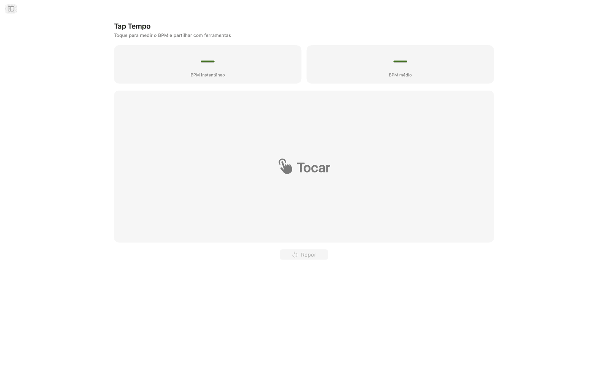
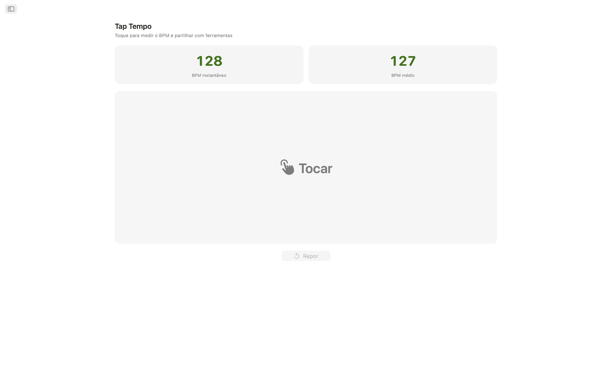
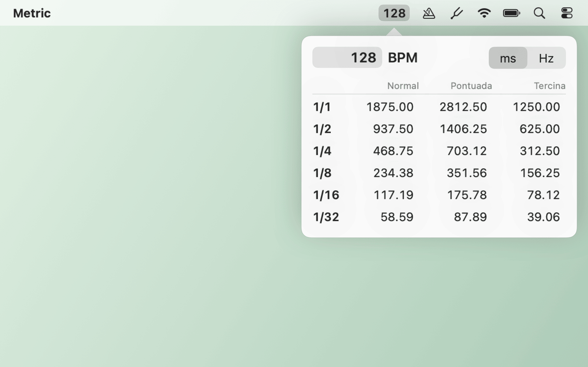
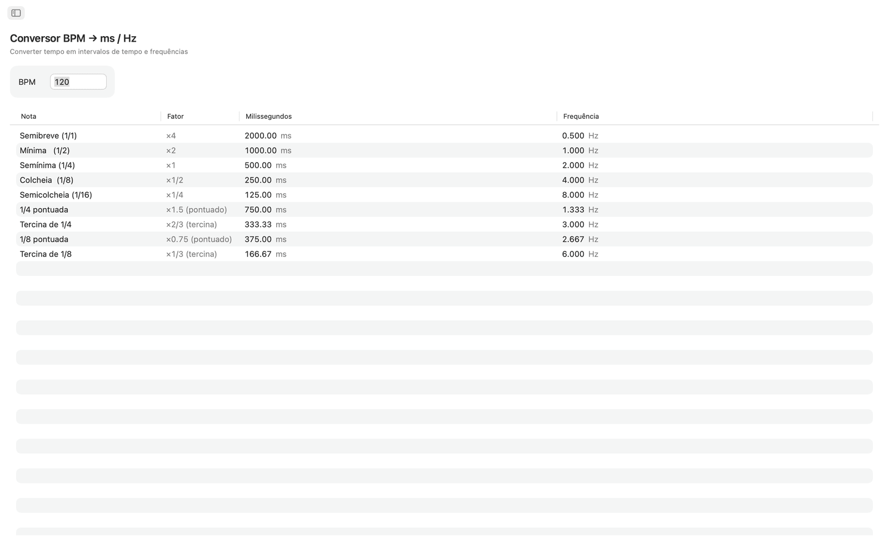
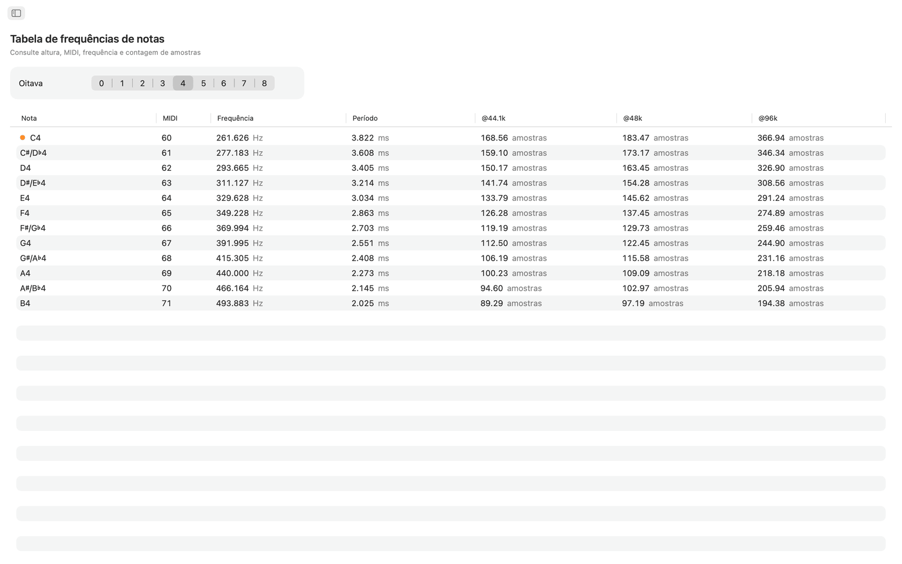
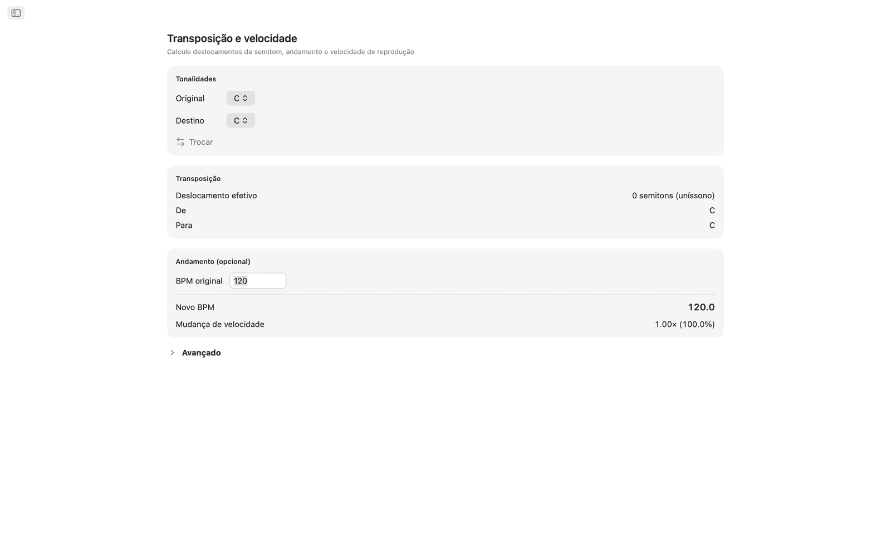
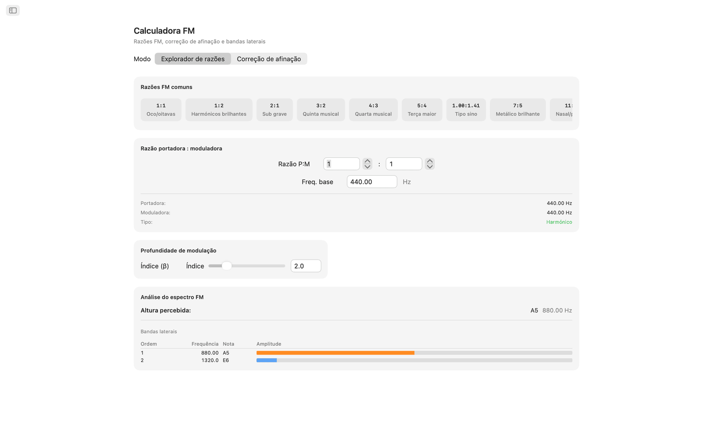
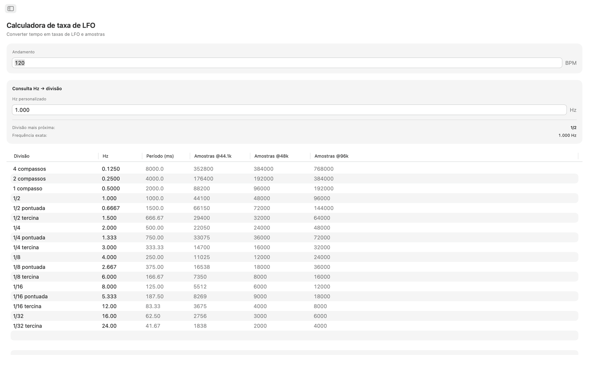
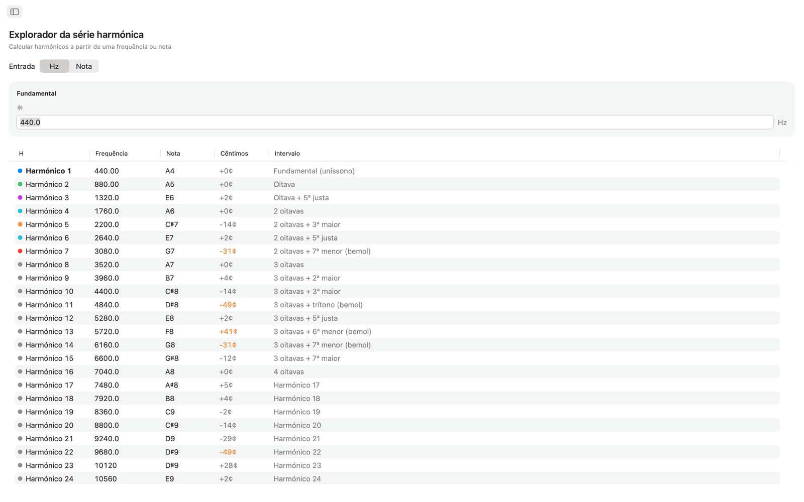
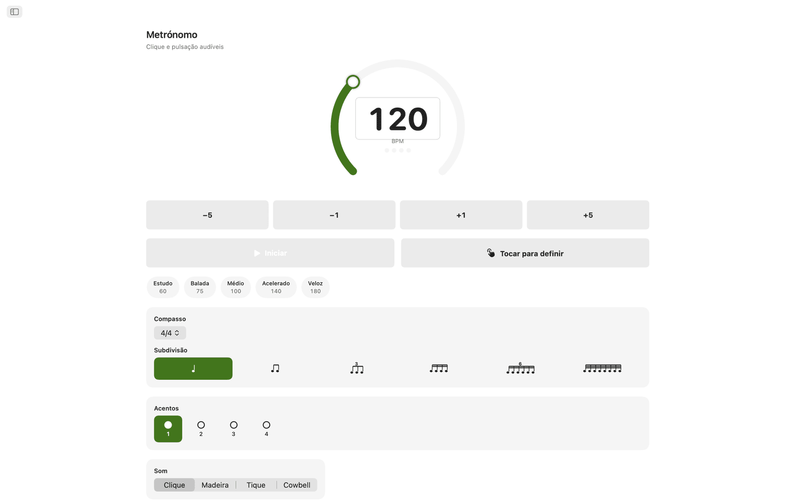
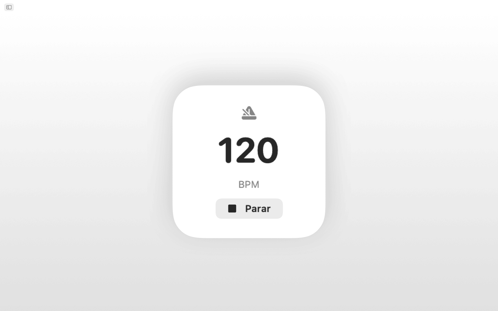
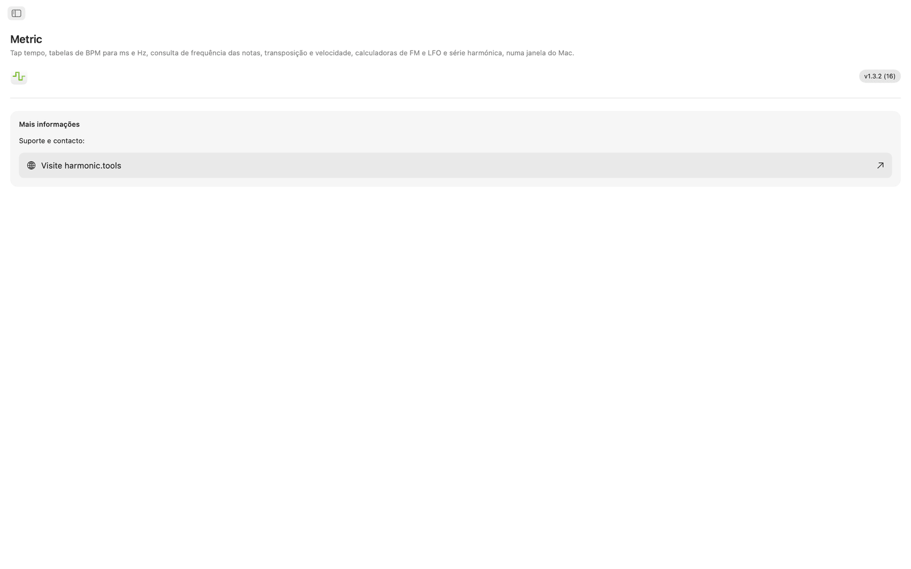
Funcionalidades
- O metrónomo tem um disco de tempo, tempo definido por toque, compassos, subdivisões e um indicador visual de batida.
- Clique no grande alvo de toque para medir o tempo. O Metric mostra o BPM do último toque e uma média contínua de até oito toques, e qualquer das leituras pode seguir diretamente para o Conversor BPM, a Transposição ou as Taxas LFO com um clique.
- O conversor BPM → ms / Hz recebe um tempo e devolve valores normais, pontuados e tercinas para semibreves, mínimas, semínimas, colcheias e semicolcheias. Cada linha mostra milissegundos e frequência em Hz, para ajustar delay, pré-delay de reverb ou temporização de sidechain sem calculadora.
- A tabela de frequência de notas lista as 108 notas cromáticas de C0 a B8. Cada nota mostra o número MIDI, a frequência em Hz, o período em milissegundos e as contagens de amostras a 44,1 kHz, 48 kHz e 96 kHz. O C central está assinalado. Baseada em A4 = 440 Hz.
- Na transposição, escolha uma tonalidade original e uma tonalidade alvo para ver o deslocamento por meios-tons, o nome do intervalo e o valor exato de transposição da DAW. Com um BPM original, o Metric calcula o novo tempo e a razão de velocidade de reprodução. Um controlo de cents (±100) e um controlo de velocidade que abrange duas oitavas (±24 meios-tons) permitem o ajuste fino.
- A calculadora FM tem dois modos. O Explorador de razões define razões de portadora e modulador a partir de uma frequência base e oferece dez predefinições FM, desde oitavas ocas (1:1) a sinos inarmónicos (1:π). A Correção de Afinação funciona ao contrário: escolha uma nota alvo e obtenha as frequências exatas de portadora e modulador. Ambos os modos mostram uma tabela de bandas laterais com até dez parciais, as respetivas frequências, as notas mais próximas e amplitudes codificadas por cores, controladas por um controlo de índice de modulação.
- A calculadora de taxa LFO converte qualquer BPM em taxas LFO em 17 divisões musicais, de quatro compassos a tercinas de 1/32. Cada linha mostra Hz, período em milissegundos e amostras por ciclo a 44,1 kHz, 48 kHz e 96 kHz. A pesquisa inversa recebe qualquer valor em Hz e encontra a divisão musical mais próxima, com o erro indicado.
- O explorador de série harmónica parte de uma frequência ou de qualquer nota e lista os primeiros 32 harmónicos com frequência, nome da nota mais próxima, desvio em cents e nome do intervalo. Os harmónicos de ordem baixa são codificados por cores e os desvios superiores a 30 cents ficam realçados, o que facilita a deteção de conteúdo inarmónico.
Tempo e afinação partilhados
Toque um tempo uma vez e o Conversor BPM, a Transposição e as Taxas LFO passam todos a usar o mesmo BPM ao vivo. A Frequência de Notas, a Calculadora FM e os Harmónicos usam todos A4 = 440 Hz.
Siri, Shortcuts e widget
Peça à Siri para iniciar ou parar o metrónomo, definir um BPM, tocar um tempo, converter BPM em ms, encontrar a frequência de uma nota ou transpor um tempo. Cada ferramenta é também uma ação de Shortcuts, e o widget de BPM mantém o seu tempo no Centro de Notificações.
Ferramentas na barra de menus
Marque um tempo na barra de menus sem abrir a app. Com o botão direito, veja os tempos de delay em ms ou Hz e escreva qualquer tempo. O metrónomo e as notas são opcionais, e há definições para usar só a barra de menus e para abrir ao iniciar sessão.
No desktop
- Funciona totalmente offline: sem conta, sem anúncios, sem rastreamento
- Aplicação nativa macOS com navegação lateral
- Interface com modo escuro que acompanha a aparência do sistema
- Contagens de amostras a 44,1 kHz, 48 kHz e 96 kHz
- Janela redimensionável: mantenha-a aberta ao lado da sua DAW
Acessibilidade
Funciona com o VoiceOver e o Controlo por Voz e pode ser utilizado pelo teclado, com as setas e a barra de espaços.
O Metric pode ser experimentado gratuitamente durante 7 dias. Depois do período de teste, o acesso completo é uma compra única, sem subscrição.